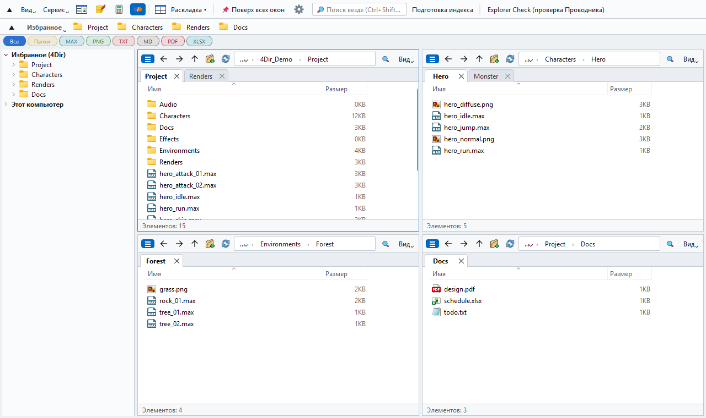
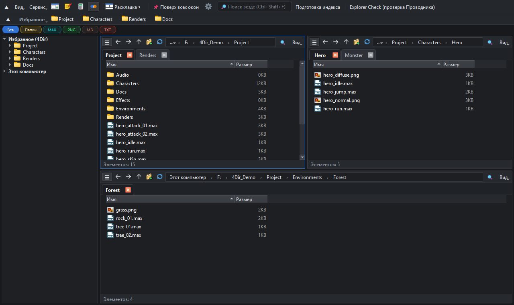

Многопанельный проводник — быстрее Проводника Windows!!
Бесплатный файловый менеджер для Windows 10/11. Без установки — распакуйте и запустите.
Windows 10/11 64-бит · 47 MB · 2026-11-06 · бесплатно
Поддержать 4Dir
4Dir бесплатен и без рекламы. Если он экономит ваше время, небольшое пожертвование поможет выпускать обновления.
Что нового в v0.9.108
- Просмотр видео: видео играет в окне просмотра и листается по кадрам, как GIF (|◀ ▶|, ← →, пробел — пуск/пауза), с полосой и лентой кадров, текущим / общим временем и fps, звуком (кнопка выключения) и автозапуском. Телефоны (Galaxy, iPhone, камеры) видны в «Этот компьютер» — открывайте их и копируйте, перетаскивайте, вставляйте, переименовывайте или удаляйте файлы. Кнопка вверху показывает или скрывает кнопки типов во всех панелях.
- Архивы как папки: двойной щелчок по ZIP, 7Z, RAR или TAR открывает его в 4Dir (только чтение); открыть, скопировать, перетащить или F6 — извлечь файлы. Очередь копирования: копирование и перемещение по одному — кнопка ⏳ показывает ожидающие, их можно отменить или приостановить. Плоский вид: все файлы папки одним списком (правый щелчок по пустому месту или Сервис). Поиск дубликатов: одинаковое содержимое при любом имени — оставьте по одному в группе, остальное в корзину. Пробел открывает и закрывает окно просмотра.
- Окно просмотра: просмотр открывается в отдельном окне, как заметки, и панели не меняют размер; окно запоминает место и размер и может быть поверх всех (правый щелчок). Кадры GIF: |◀ назад, ▶ пуск / ⏸ пауза, ■ стоп, ▶| вперёд, ленту кадров можно перетаскивать. Кнопки типов над списком стали меньше, окрашены по типу и не обрезаются — не поместившиеся уходят в +N ▾. Картинки в заметках сохраняют заданный размер: щёлкните картинку и потяните угловой маркер.
- Окно заметок: кнопка 📝 (или Alt+M, или Сервис ▸ Окно заметок) открывает заметки в отдельном окне, размеры панелей не меняются; окно видно на панели задач и может быть поверх всех окон. Цветные заметки с флажками ('[] ' в начале строки), маркерами ('- '), жирным, курсивом, подчёркиванием, зачёркиванием, цветом и размером текста и счётчиком 3/5. Перетащите заголовок для порядка, двойной щелчок — свернуть, закрепляйте сверху, фильтруйте по тексту или цвету. Ctrl+щелчок открывает веб-адреса и пути к папкам/файлам; перетащите файлы или папки, чтобы сделать ссылки; вставляйте картинки. Заметка, прикреплённая к папке, напомнит о себе при открытии папки; с напоминанием окно заметок появится в заданное время. Удалённые заметки попадают в корзину и восстанавливаются. Заметки общие для всех окон и сохраняются автоматически. Также таблицы, нумерованные списки ('1. '), выравнивание, интервал, шрифты, поле − размер + и кнопка вставки картинки; ссылки синие.
- Картинки и типы: строка кнопок типов над списком ([Все] [Папки] [JPG] [PSD]…) показывает только этот тип (Ctrl+щелчок — несколько). Группировка по типу (папки · JPG · PNG…) в режиме «Таблица». В режимах значков на миниатюрах есть метка типа (PSD · PNG · GIF…), а папки показывают первую картинку как обложку. В области просмотра — управление кадрами GIF (предыдущий/следующий, ползунок и лента кадров, номер и задержка, сохранить кадр как PNG) и просмотр документов и видео средствами Windows, если он доступен.
- Подсказки: у всех кнопок и меню при наведении появляется короткое пояснение. Отключаются в Настройки ▸ Общие.

Возможности
До 20 панелей
Раскладки на 1, 2, 3, 4 или 6 панелей одним щелчком или любая сетка до 5 × 4. У каждой панели свои вкладки.
Не мешает работе
Папки читаются напрямую, без тяжёлого представления оболочки Windows. В простое нет таймеров и опросов — можно держать открытым рядом с 3ds Max, играми и другими тяжёлыми программами.
Мгновенный поиск
Начните печатать — поиск по всем именам файлов на дисках. Собственный индекс обновляется в реальном времени, права администратора не нужны.
Статус SVN с первого взгляда
Значки «изменён / добавлен / конфликт» читаются прямо из .svn; папки краснеют, если внутри что-то изменилось. Git и Perforce — через значки-наложения Windows.
Как Проводник
Те же сочетания клавиш, полное контекстное меню Windows, перетаскивание в Проводник и другие программы и обратно. Изображение .webp можно сохранить как PNG или JPG через правый клик.
Портативно и приватно
Настройки хранятся в папке 4Dir. Светлая/тёмная тема, 10 языков, пакетное переименование, восстановление сеанса и диагностика Проводника встроены.

Установка
- Скачайте zip кнопкой выше (или в разделе Releases на GitHub). Зелёная кнопка «Code → Download ZIP» на GitHub содержит только исходный код и не запустится.
- Щёлкните архив правой кнопкой → Свойства → отметьте Разблокировать → OK. (Иначе Windows будет каждый раз показывать предупреждение.)
- Распакуйте в любое место и дважды щёлкните 4Dir.exe. (или 4Dir.vbs, если 4Dir.exe заблокирован)
Если появится Windows SmartScreen: нажмите Подробнее → Выполнить в любом случае.
Проверка загрузки (необязательно)
В командной строке выполните certutil -hashfile 4Dir_v0.9.108.zip SHA256 — результат должен совпасть с:
e5fe1394569211793f93f935860c93bbd52ddf631d4b168d8fb48f3439c0c8eb
Частые вопросы
Это правда бесплатно?
Да. 4Dir — бесплатная программа с открытым кодом (GPL-3.0). Без рекламы, без регистрации, без пробного периода.
Можно ли использовать на работе?
Да. 4Dir — свободное ПО под GPL-3.0, поэтому компании тоже могут пользоваться им бесплатно, без лицензий и регистрации. Он работает без установки — проверьте только, разрешает ли ваша компания портативные программы.
Он правда быстрее Проводника?
Папка с 1000 файлов в новом окне: 4Dir — 0,4 с, Проводник — около 2 с. Ещё одно окно: у 4Dir около 10 МБ памяти, у Проводника около 130 МБ. Измерено по 5 раз на одном ПК (Windows 11, SSD). Если в папке десятки тысяч файлов, разница меньше.
Отправляет ли он данные?
Никаких личных данных. Раз в день проверяется только наличие новой версии (можно отключить в меню «Сервис»).
Что-то пошло не так?
Сервис → Сохранить журнал для отчёта о проблеме и нажмите «Отправить по почте» (или пришлите zip на support@4dir.net). Также можно создать issue на GitHub.